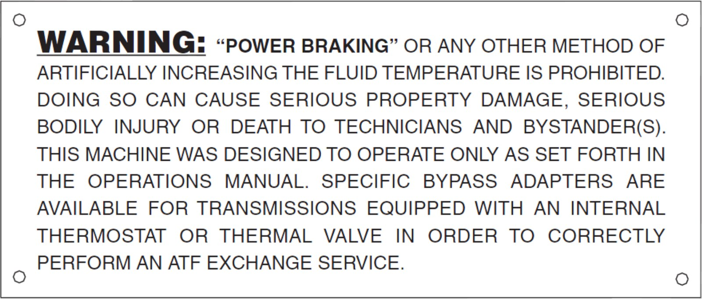
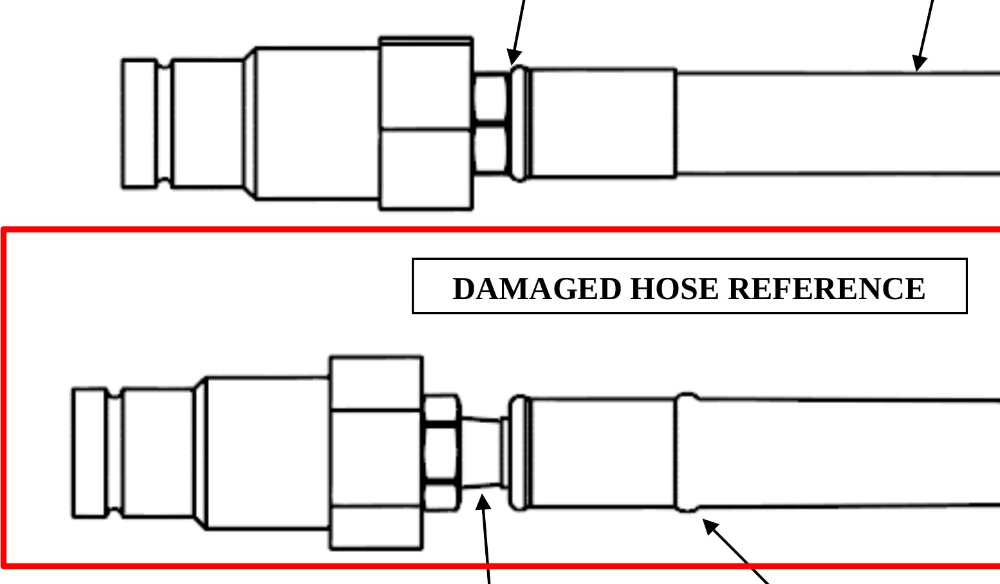
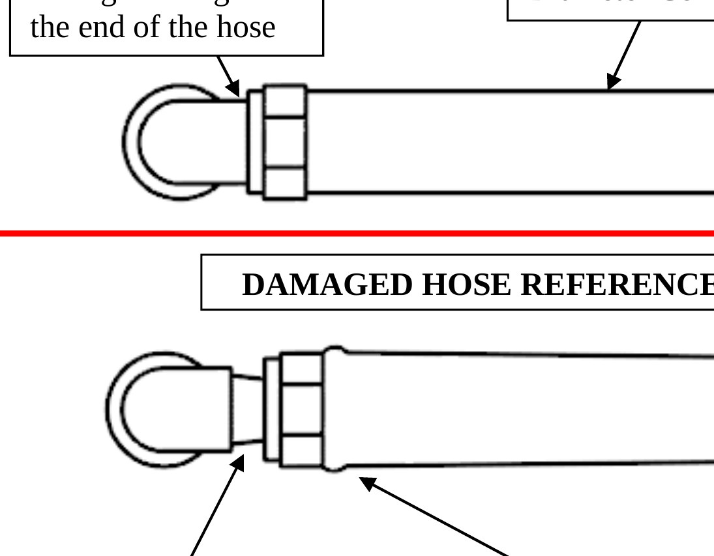

Doc no. MOC-TSB-18-04 // Vol. 18 No. 04 // Mar 1, 2018 // Brake
Power Braking Warning Decal Kit
Some technicians have been power braking while performing transmission fluid changes with MOC equipment. Power braking with the car running can damage MOC transmission service equipment. A kit of warning decals is now available to add to transmission service machines in the field (Kit 94423).
What's new
- External red and black service hoses: check both ends of each hose for swelling before the clamp or ferrule (Figure 1).
- Check that the fitting crimped or clamped to each hose end is not loose and has not pulled away from the hose, exposing the barbed fitting.
- Grab each fitting and try to twist it. If it spins inside the tubing, the connection is too loose and there may be damage.
- Feel the length of the hose: it should not feel spongy or squishy. Check the color; heat damage changes the color of the hose. Check that the diameter is consistent along the whole length.
- Open the machine and inspect the interior hoses the same way: swelling at the clamp (Figure 2), loose fittings that twist, a spongy feel or changed color.
Review the materials with all service technicians and other users of the equipment. MOC strongly recommends that technicians inspect all hoses, crimps, adapters and related components before every service, and that field personnel inspect them during routine visits. Check each machine for power braking damage before installing the warning decal.
Contact
For more information, contact the Machine & Equipment Department at 866.244.6621.



Part numbers
| Part No. | Description | Notes |
|---|---|---|
| 94423 | Kit, Power Braking Warning Decal | For machines in the field |